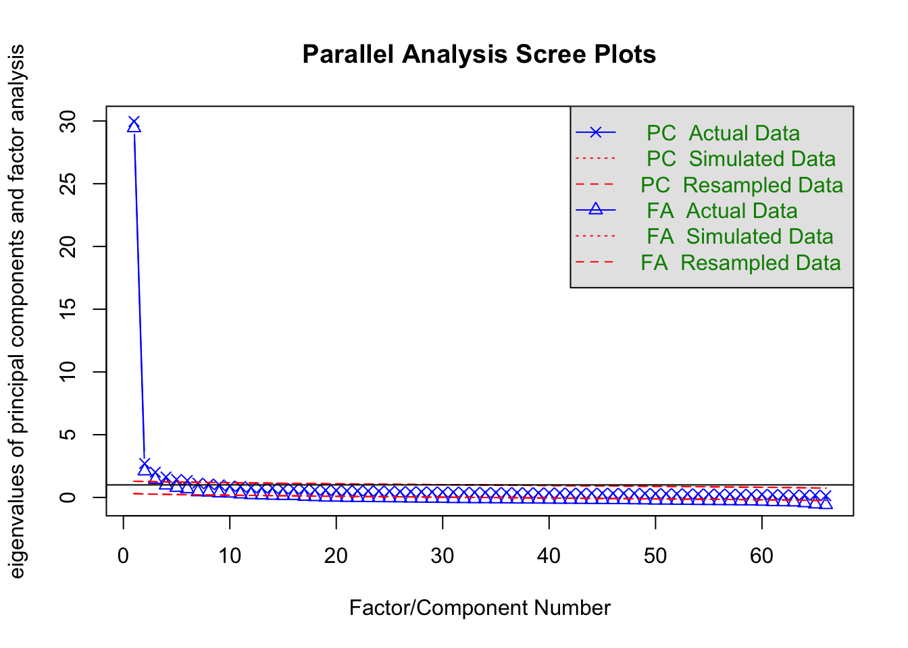

Dimensionality
This chapter deals with the topic of dimensionality. It begins with a definition of dimensionality and explains how it is important. It outlines how to investigate it and suggests what counts as good evidence. Then it reports our study of the dimensionality of the SHAS.
About Dimensionality
Dimensionality is the study of the dimensions (also known as “factors”, “components”, and “latent traits”) that the items are designed and assembled to collectively measure. This study tends to take two forms. One is exploration of what dimensions a set of items apparently measure, regardless of what they intended to measure. The other is what evidence exist to confirm that a set of items actually measure the dimension they are intended to measure.
Dimensionality is important for the reporting of scores. Scores, as summary measures of a set of items, are only meaningful to the extent that they enjoy evidence that they measure the dimension(s) they are designed to measure. Scores, in turn, are important to the extent that they support decisions that have consequences in the real world. Scores are needed to decide who gets to practice medicine, or fly an airplane.
Dimensionality is an important part of the validation process for psychological measures (Embretson and Reise 2000).
The methodology commonly used to investigate dimensionality is factor analysis. To assess the dimensionality of these 66 piloted SHAS items we use exploratory factor analysis and confirmatory factor analysis (CFA) and PCAR.
Exploratory Factor Analysis (EFA)
# LOAD PACKAGES
library(lavaan)
library(psych)
library(psychTools)
# LOAD DATA all <- read.csv('data/all.csv')
items <- read.csv("data/items.csv")
ext_items <- read.csv("data/ext_items.csv")
int_items <- read.csv("data/int_items.csv")# TEST FOR NUMBER OF FACTORS IN DATA USING PARALLEL
# ANALYSIS AND VERY SIMPLE STRUCTURE (VSS)
fa.parallel(items)
Parallel analysis suggests that the number of factors = 16 and the number of components = 6 vss(items)
Very Simple Structure
Call: vss(x = items)
VSS complexity 1 achieves a maximimum of 0.96 with 1 factors
VSS complexity 2 achieves a maximimum of 0.97 with 2 factors
The Velicer MAP achieves a minimum of 0.01 with 6 factors
BIC achieves a minimum of -788.85 with 8 factors
Sample Size adjusted BIC achieves a minimum of 4438.02 with 8 factors
Statistics by number of factors
vss1 vss2 map dof chisq prob sqresid fit RMSEA BIC SABIC complex
1 0.96 0.00 0.0091 2079 37231 0 33 0.96 0.072 20438 27044 1.0
2 0.50 0.97 0.0068 2014 29480 0 26 0.97 0.065 13211 19611 1.6
3 0.35 0.81 0.0058 1950 24035 0 23 0.98 0.059 8283 14479 2.1
4 0.29 0.67 0.0056 1887 20947 0 20 0.98 0.056 5704 11700 2.5
5 0.29 0.62 0.0055 1825 17804 0 18 0.98 0.052 3062 8861 2.7
6 0.25 0.60 0.0052 1764 15824 0 16 0.98 0.050 1575 7180 2.8
7 0.23 0.58 0.0056 1704 13729 0 15 0.98 0.047 -35 5379 2.9
8 0.21 0.54 0.0055 1645 12499 0 14 0.98 0.045 -789 4438 3.0
eChisq SRMR eCRMS eBIC
1 37967 0.052 0.053 21173
2 23187 0.041 0.042 6918
3 16097 0.034 0.036 345
4 12506 0.030 0.032 -2737
5 9591 0.026 0.029 -5151
6 7329 0.023 0.025 -6921
7 5949 0.021 0.023 -7815
8 5053 0.019 0.022 -8235# PRINCIPAL COMPONENTS ANALYSIS
principal(items)Principal Components Analysis
Call: principal(r = items)
Standardized loadings (pattern matrix) based upon correlation matrix
PC1 h2 u2 com
Q7 0.67 0.451 0.55 1
Q10 0.64 0.404 0.60 1
Q11 0.77 0.598 0.40 1
Q16 0.69 0.481 0.52 1
Q17 0.33 0.112 0.89 1
Q18 0.78 0.604 0.40 1
Q19 0.75 0.569 0.43 1
Q20 0.68 0.466 0.53 1
Q21 0.68 0.467 0.53 1
Q22 0.70 0.488 0.51 1
Q23 0.64 0.406 0.59 1
Q24 0.66 0.440 0.56 1
Q25 0.76 0.583 0.42 1
Q26 0.66 0.430 0.57 1
Q27 0.47 0.222 0.78 1
Q28 0.73 0.529 0.47 1
Q29 0.69 0.474 0.53 1
Q30 0.70 0.496 0.50 1
Q31 0.65 0.417 0.58 1
Q32 0.73 0.539 0.46 1
Q34 0.65 0.428 0.57 1
Q35 0.74 0.542 0.46 1
Q36 0.77 0.590 0.41 1
Q37 0.76 0.572 0.43 1
Q38 0.80 0.647 0.35 1
Q39 0.72 0.515 0.48 1
Q40 0.75 0.564 0.44 1
Q41 0.30 0.089 0.91 1
Q42 0.77 0.594 0.41 1
Q43 0.74 0.542 0.46 1
Q44 0.80 0.642 0.36 1
Q45 0.72 0.516 0.48 1
Q46 0.15 0.021 0.98 1
Q47 0.52 0.269 0.73 1
Q49 0.72 0.520 0.48 1
Q50 0.53 0.281 0.72 1
Q51 0.62 0.380 0.62 1
Q52 0.76 0.577 0.42 1
Q53 0.73 0.535 0.46 1
Q54 0.75 0.568 0.43 1
Q55 0.27 0.075 0.93 1
Q56 0.82 0.670 0.33 1
Q57 0.72 0.521 0.48 1
Q58 0.73 0.533 0.47 1
Q59 0.76 0.579 0.42 1
Q60 0.47 0.224 0.78 1
Q61 0.72 0.511 0.49 1
Q62 0.65 0.424 0.58 1
Q63 0.77 0.590 0.41 1
Q64 0.71 0.503 0.50 1
Q65 0.61 0.373 0.63 1
Q66 0.71 0.498 0.50 1
Q68 0.68 0.459 0.54 1
Q69 0.57 0.323 0.68 1
Q70 0.56 0.309 0.69 1
Q71 0.74 0.544 0.46 1
Q72 0.54 0.294 0.71 1
Q73 0.64 0.405 0.59 1
Q74 0.60 0.359 0.64 1
Q76 0.74 0.544 0.46 1
Q77 0.77 0.598 0.40 1
Q78 0.66 0.442 0.56 1
Q79 0.60 0.365 0.64 1
Q80 0.68 0.466 0.53 1
Q81 0.65 0.419 0.58 1
Q82 0.61 0.368 0.63 1
PC1
SS loadings 29.96
Proportion Var 0.45
Mean item complexity = 1
Test of the hypothesis that 1 component is sufficient.
The root mean square of the residuals (RMSR) is 0.05
with the empirical chi square 38864.3 with prob < 0
Fit based upon off diagonal values = 0.99# PRINCIPAL AXIS FACTORING library(psych) fit <-
# factor.pa(items, nfactors=3, rotation='varimax') fit #
# print results# PRINCIPAL COMPONENTS ANALYSIS entering raw data and
# extracting PCs from the correlation matrix fit <-
# princomp(items, cor=TRUE) summary(fit) # print variance
# accounted for loadings(fit) # pc loadings
# plot(fit,type='lines') # scree plot fit$scores # the
# principal components biplot(fit)# DETERMINE NUMBER OF FACTORS TO EXTRACT library(nFactors)
# ev <- eigen(cor(items)) # get eigenvalues ap <-
# parallel(subject=nrow(items),var=ncol(items),
# rep=100,cent=.05) nS <- nScree(x=ev$values,
# aparallel=ap$eigen$qevpea) plotnScree(nS)# MAXIMUM LIKELIHOOD FACTOR ANALYSIS entering raw data and
# extracting 3 factors, with varimax rotation fit <-
# factanal(items, 3, rotation='varimax') print(fit,
# digits=2, cutoff=.3, sort=TRUE) # plot factor 1 by factor
# 2 load <- fit$loadings[,1:2] plot(load,type='n') # set up
# plot text(load,labels=names(items),cex=.7) # add variable
# namesConfirmatory Factor Analysis (CFA)
The purpose of confirmatory factor analysis is, as the name implies, to confirm that items measure the factor(s) or trait(s) for which the items were designed and intended to measure.
In our use of CFA we used several statistics and fit indices:
- Root Mean Square Error of Approximation (RMSEA)
- Comparative Fit Index (CFI)
- Tucker–Lewis Index (TLI), and
- Standardized Root-Mean-Square Residual (SRMR)
Based on published criteria (Hu & Bentler, 1999; Wang & Wang, 2019), we used the following standards for good fit:
- CFI > 0.95
- TLI > 0.95
- RMSEA < 0.05
- SRMR < 0.08
We use the MLM estimator (Brown 2006).
# ltm::factor.scores(items) # Computation of factor scores
# for grm, ltm, rasch and tpm models# library(lavaan) MODEL WITH ONE COMMON FACTOR
# wb_1factor <- ' #start of model
# latent variable definitions (common factors) wellbeing =~
# NA*sense.peace + NA*sense.wonder + NA*sense.gratitude +
# NA*sense.purpose
# latent variable variances wellbeing ~~ 1*wellbeing
# latent variable covariances latent variable means
# manifest variable variances (uniquenesses) sense.peace ~~
# sense.peace sense.wonder ~~ sense.wonder sense.gratitude
# ~~ sense.gratitude sense.purpose ~~ sense.purpose
# manifest variable covariances (uniquenesses)
# manifest variable means sense.peace ~ 1 sense.wonder ~ 1
# sense.gratitude ~ 1 sense.purpose ~ 1 end of model
# CFA1 <- lavaan(wb_1factor, data=items, estimator = 'MLM')
# # estimate model summary(CFA1, standardized=TRUE,
# fit.measures=TRUE)The results of CFA, using MLR estimation, confirmed the second order factor model, in line with the original structure of the scale (see Olufadi, 2017), because the values of the indices were above the acceptable threshold [χ2 (167) = 284.032, p < 0.001; RMSEA = 0.030 (90% CI = 0.024-0.036), CFI = 0.983, TLI = 0.981, SRMR = 0.023], compared to the unidimensional model [χ2 (170) = 316.949, p < 0.001; RMSEA = 0.034 (90% CI = 0.028-0.039), CFI = 0.978, TLI = 0.976, SRMR = 0.023] and a 3-uncorrelated-factors model [χ2 (170) = 2427.628, p < 0.001; RMSEA = 0.132 (90% CI = 0.127-0.136), CFI = 0.669, TLI = 0.631, SRMR = 0.345]. Based on RMSEA, CFI, TLI, and SRMR, the results indicated that the model provided satisfactory representations of the underlying structure of the psychological well-being construct. All items loaded significantly (ranging from 0.535 to 0.817) in relation to each first order factor, at a p < 0.01 significance level. These results of the CFA offer evidence that the four items measure one dimension of well-being.